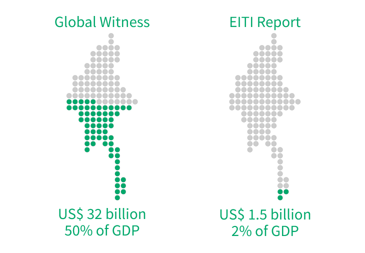
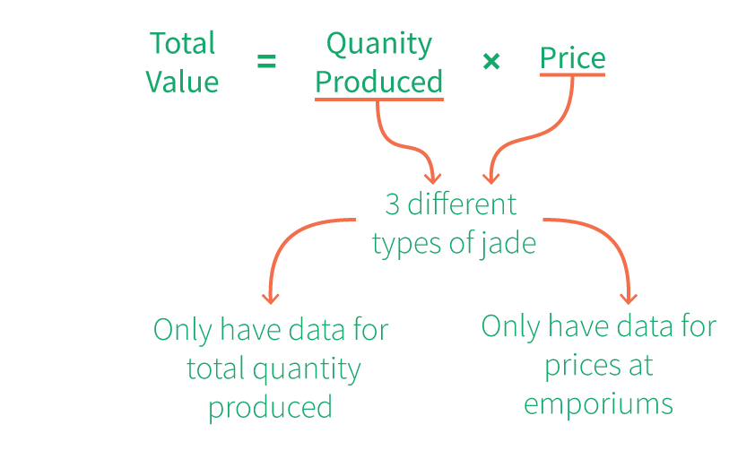
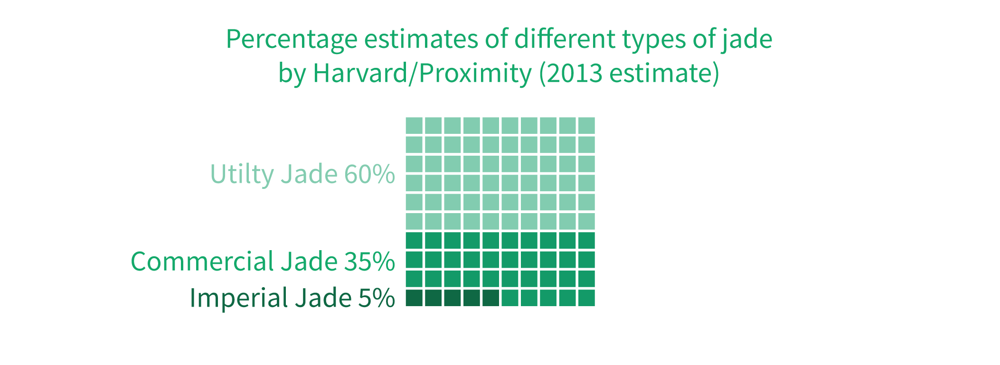
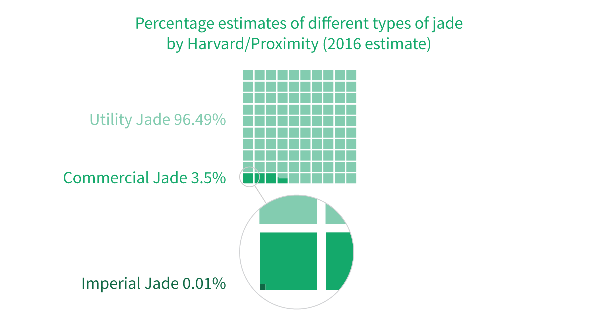
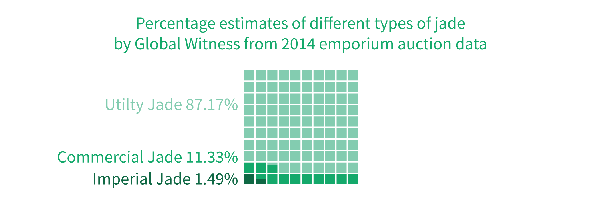
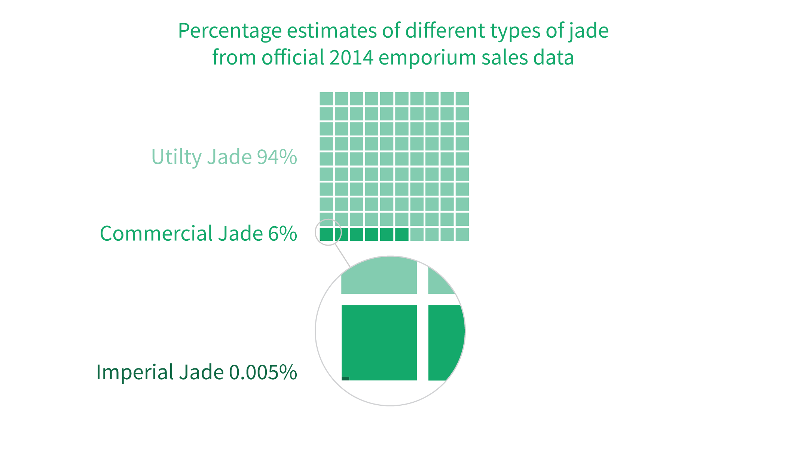
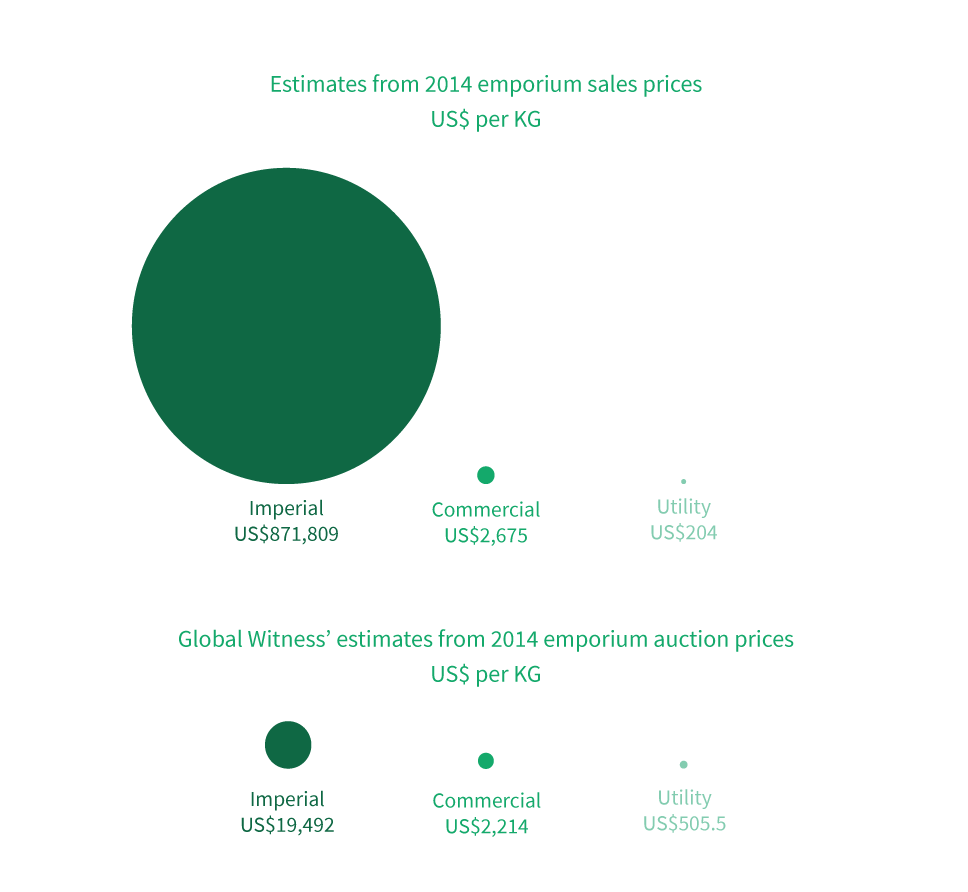
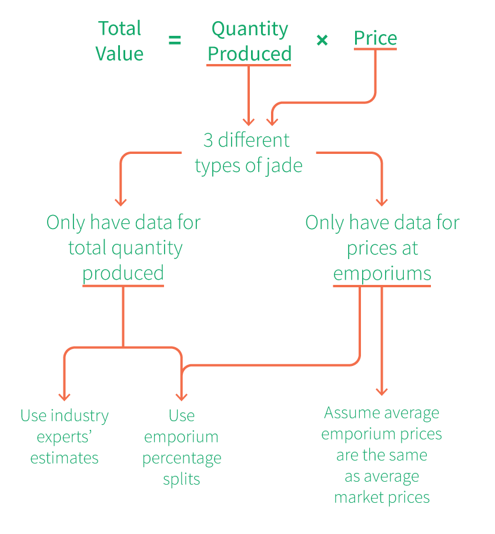
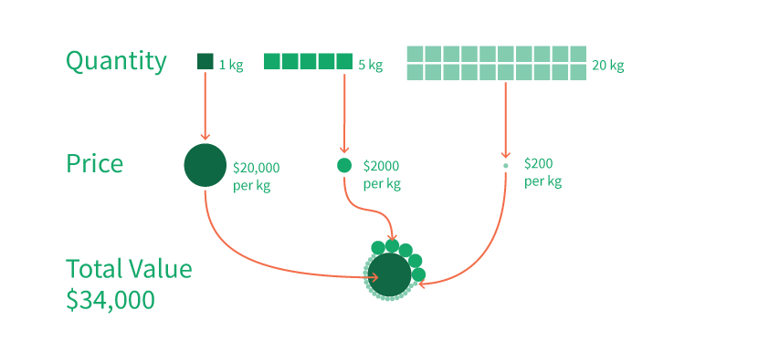

အချက်အလက်အသစ်များ ထွက်ပေါ်လာသည့်တိုင် တန်ဖိုးခန့်မှန်းရန် ခက်ခဲနေဆဲ မြန်မာ့ကျောက်စိမ်းကဏ္ဍ
မြန်မာနိုင်ငံအတွက် ကျောက်စိမ်းကဏ္ဍ၏ အရေးပါပုံကို ချဲ့ကားပုံဖော်ရန် မဖြစ်နိုင်ပါ။ သို့သော် ၎င်း၏ တန်ဖိုးအမှန်ကို အတိအကျဖော်ထုတ်ရန်မှာလည်း ခက်ခဲလှသည်။
Global Witness မှ ၂၀၁၅ခုနှစ်တွင် ထုတ်ပြန်သည့် အစီရင်ခံစာ ခန့်မှန်းချက်အရ ၂၀၁၄ခုနှစ်အတွင်း ကျောက်စိမ်းကဏ္ဍမှ ရရှိငွေစုစုပေါင်းသည် အမေရိကန်ဒေါ်လာ ၅ ဘီလီယံမှ ၃၁ဘီလီယံကြားရှိသည်။ ထို၃၁ဘီလီယံဆိုသော ပမာဏသည် ထိုနှစ်အတွက် မြန်မာနိုင်ငံ ပြည်တွင်းအသားတင် ထုတ်လုပ်မှု (gross domestic product or GDP)၏ ၅၀ ရာခိုင်နှုန်းနှင့် ညီပါသည်။
အထက်ပါ ကိန်းဂဏန်းများသည် တွင်းထွက်သယံဇာတ အရင်းအမြစ် တူးဖော်ရေးလုပ်ငန်းများ ပွင့်လင်းမြင်သာမှု ဖော်ဆောင်ရေး (Extractive Industries Transparency Initiative သို့မဟုတ် EITI) အတွက် မြန်မာနိုင်ငံ၏ ၂၀၁၅ခုနှစ်တွင် ထုတ်ပြန်ခဲ့သည့် အစီရင်ခံစာနှင့် ကွဲလွဲနေသည်။ ထိုအစီရင်ခံစာက ၂၀၁၄ ခုနှစ် တရားဝင်ကျောက်မျက်ပြပွဲများတွင် ကျောက်စိမ်း အမေရိကန်ဒေါ်လာ ၁.၅ ဘီလီယံဖိုးခန့် ရောင်းချရခဲ့သည်ဟု ဖော်ပြထားသည်။
မြန်မာ့ကျောက်စိမ်းကဏ္ဍ၏ ဝင်ငွေကို ခန့်မှန်းသည့် အခြားအဖွဲ့များလည်း ရှိပါသည်။ ၂၀၁၃ခုနှစ်တွင် ဟားဗတ်တက္ကသိုလ်Ash Center နှင့် မြန်မာနိုင်ငံမှ လူမှုရေးအဖွဲ့အစည်းတစ်ခုဖြစ်သော Proximity Designs တို့ ပူးပေါင်းဆောင်ရွက်သည့် သုတေသနက ကျောက်စိမ်းဝင်ငွေသည် တနှစ်လျင် ၈ ဘီလီယံရှိသည်ဟု ခန့်မှန်းထားသည်။ ထိုအဖွ့ဲအစည်းနှစ်ခုကပင် ထပ်မံပြုလုပ်ခဲ့သည့် ၂၀၁၆ခုနှစ် ခန့်မှန်းချက် ကမူ တနှစ်လျှင် အမေရိကန်ဒေါ်လာ ၁၅ ဘီလီယံ ရှိမည်ဟု ဆိုပါသည်။
ထိုကဲ့သို့ ကိန်းဂဏန်းမှန်းဆချက်အမျိုးမျိုးဖြစ်နေခြင်းကပင် မြန်မာ့ကျောက်စိမ်းကဏ္ဍ၏ ဝင်ငွေစုစုပေါင်းကို သိနိုင်ရန်မှာ မည်မျှရှုပ်ထွေးကြောင်း သက်သေပြနေသည်။ ရှင်းလင်း၊ တိကျသည့် အချက်အလက်များကို ရှာဖွေရန်မှာ အလွန်ခက်ခဲသည်။ ခန့်မှန်းချက်အများစုမှာ ယူဆချက်အမျိုးမျိုးအပေါ် အခြေခံထားပါသည်။
တန်ဖိုးမှန်းဆချက်များ ကွဲပြားနေခြင်း၏ အကြောင်းရင်းမှာ တူးဖော်ရရှိသည့် ကျောက်စိမ်းပမာဏအများစုကို အစိုးရထံသို့ သတင်းပို့ခြင်းမရှိသောကြောင့် ဖြစ်သည်။ ကျောက်စိမ်းပမာဏ အတော်များများမှာ ပြည်ပပို့ တရားမဝင်တင်ပို့ခြင်းက ကျောက်စိမ်းကဏ္ဍတန်ဖိုးနှင့် ထုတ်လုပ်သည့် ပမာဏကို မှန်းဆရန် ခက်ခဲစေပါသည်။
ယခုဆောင်းပါး၏ ရည်ရွယ်ချက်မှာ ယခင်သုတေသနများမှ ခန့်မှန်းချက်များကို မည်သို့တွက်ချက်ထားပုံအား ပုံများနှင့် ဖော်ပြရန်ဖြစ်ပါသည်။ ၂၀၁၄ခုနှစ်အတွက် ကျောက်စိမ်းကဏ္ဍတန်ဖိုးကို ခန့်မှန်းရန် Global Witness က အသုံးပြုခဲ့သည့် တွက်ချက်မှုများကို ပြန်လည်ပြုလုပ်ထားသည်။ ထိုနည်းလမ်းကို အခြေခံပြီး တဆင့်ဆီ တွက်ချက်ခြင်းဖြင့် ၎င်းတို့၏ ခန့်မှန်းချက်ကိန်းဂဏန်းများက မည်သည်ကို ဆိုလိုသည်၊ မည်သည့်အရာများက မရှင်းလင်းသေးဆိုသည်ကို သိမြင်နိုင်ပါသည်။ ထို့ပြင် ထပ်မံထွက်ပေါ်လာသည့် နှစ်နှစ်စာ အချက်အလက်များ၊ မြန်မာ့ကျောက်မျက်ရတနာ ရောင်းဝယ်ရေးလုပ်ငန်းမှ ရရှိသည့် အသေးစိတ် ထုတ်ပြန်ချက်များကိုလည်း အသုံးပြုထားပါသည်။
တွက်ချက်မှုများမစတင်မီ ကျောက်စိမ်းကဏ္ဍတန်ဖိုးကို ခန့်မှန်းရန် လိုအပ်သည့် အခြေခံ အချက်အလက်များကို ဖော်ပြလိုပါသည်။ ထိုတန်ဖိုးကို တွက်ချက်ရန် အောက်ပါ အလွန်ရိုးစင်းသည့် တွက်ချက်ပုံကို အခြေခံပါသည်။
ကျောက်စိမ်းမည်မျှထုတ်သည်၊ မည်သည့်ဈေးနှင့်ရောင်းသည်ကို သိရှိပါက ရရှိမည့်ဝင်ငွေပမာဏကို တွက်ချက်နိုင်မည်ဖြစ်သည်။ သို့သော် ထို့နောက်တွင် ရှုပ်ထွေးမှုများ ရှိလာပါသည်။ ကျောက်စိမ်းအားလုံးမှာ တန်ဖိုးတူ မဟုတ်ပါ။ ကျောက်စိမ်းအမျိုးအစား သုံးမျိုးရှိပြီး အချို့အမျိုးအစားမှာ အခြားအမျိုးအစားထက် တန်ဖိုးအလွန်များပါသည်။
ထုတ်လုပ်သည့် ပမာဏကို ကြည့်မည်ဆိုပါကလည်း ထုတ်လုပ်ခဲ့သမျှ ကျောက်စိမ်းအားလုံး၏ စုစုပေါင်း ပမာဏကိုသာ ရနိုင်ပါသည်။ မည်သည့်အမျိုးအစားကို မည်မျှထုတ်လုပ်ခဲ့သည်အား ခွဲခြားဖော်ပြထားခြင်းမရှိပါ။ ထို့ပြင် အစိုးရက တရားဝင်ပြုလုပ်သည့် ကျောက်မျက်နှင့် ကျောက်စိမ်းပြပွဲတွင် ရောင်းရသည့်ဈေးကိုသာ သိရှိရသည်။ ယင်းပြပွဲရောင်းချရသည့် ပမာဏသည် တနှစ်လုံးထုတ်လုပ်သည့် ကျောက်စိမ်းပမာဏနှင့် နှိုင်းယှဉ်ပါက မဆိုစလောက်မျှသာ ဖြစ်သည်။
အထက်ပါ မတိကျမရေရာမှုများအပြင် တူးဖော်ရောင်းခြသည့် ကျောက်စိမ်းပမာဏ၊ ဈေးနှုန်းနှင့် ကျောက်စိမ်းကဏ္ဍ၏ တန်ဖိုးစုစုပေါင်းမှာလည်း နှစ်အလိုက် အတော်ပြောင်းလဲပါသေးသည်။
ကျောက်စိမ်းဈေးကွက် ပြောင်းလဲမှု - ၂၀၁၄ခုနှစ်သည် ထူးခြားသောနှစ် ဖြစ်ပါသည်။
Global Witness ၏ အမြင့်ဆုံးခန့်မှန်းချက်ဖြစ်သော အမေရိကန်ဒေါ်လာ ၃၁ဘီလီယံ ဝင်ငွေရရှိခဲ့သည့် ၂၀၁၄ ခုနှစ်ကို ပထမဆုံး လေ့လာခဲ့ပါသည်။ ရုတ်တရက်ဆိုလျှင် ထိုတန်ဖိုးမှာ ကျောက်စိမ်းကဏ္ဍအတွက် အခြားနှစ်တန်ဖိုးများနှင့် မတိမ်းမယိမ်းဟု ထင်ရသော်လည်း အသေအခြား ဆန်းစစ်ကြည့်ပါက မမှန်ကန်ပါ။
ပထမဆုံးအဆင့်ဖြင့် နှစ်စဉ် စုစုပေါင်းကျောက်စိမ်းထုတ်လုပ်မှု ပမာဏ ပြောင်းလဲလာပုံကို ကြည့်ပါ။
ထိုပမာဏကို မြန်မာနိုင်ငံ ဗဟိုစာရင်းအင်းဌာနက စုစည်းဖော်ပြပြီး ထိုအချက်အလက်များကိုပင် Global Witness က ကိုးကားခဲ့ပါသည်။ အောက်ပါပုံအရ ၂၀၁၄ ခုနှစ်သည် ဆယ်စုနှစ်အတွင်း ထုတ်လုပ်မှုအရေအတွက် အနည်းဆုံးဖြစ်သည်ကို မြင်နိုင်ပါသည်။
ဒုတိယအနေဖြင့် ဈေးနှုန်းအတက်အကျကို လေ့လာထားသည်။ ကဏ္ဍတခုလုံးကိုခြုံသည့် ပျှမ်းမျှဈေးနှုန်းမရှိသော်လည်း ကုလသမဂ္ဂ ကုန်သွယ်မှုအချက်အလက်များမှ တရုတ်နိုင်ငံသို့ တင်ပို့ခဲ့သည့် ကျောက်စိမ်းအရိုင်းများ၏ ပျှမ်းမျှဈေးနှုန်းများကို ရရှိနိုင်ပါသည်။ ၂၀၁၃ နှင့် ၂၀၁၄ ခုနှစ်များတွင် ပြည်ပပို့သည့် ကျောက်စိမ်းဈေးနှုန်းများ အလွန်မြင့်မားခဲ့ပြီး ၂၀၁၅ခုနှစ်တွင်မူ တဟုန်ထိုး တန်ဖိုးကျခဲ့ပါသည်။
နောက်ဆုံးအနေနှင့် တရုတ်သို့တင်ပို့ခဲ့သည့် စုစုပေါင်းတန်ဖိုးကို လေ့လာထားပါသည်။ ကျောက်စိမ်းကဏ္ဍတခုလုံး၏ စုစုပေါင်းတန်ဖိုးကို သိနိုင်ရန်မဖြစ်နိုင်သောကြောင့် အနီးစပ်ဆုံးမှန်းဆနိုင်ရန် ကျောက်စိမ်းဝယ်လက် အကြီးဆုံးဈေးကွက်သို့ တရားဝင်တင်ပို့မှုမည်မျှရှိသည်ကို လေ့လာခဲ့ပါသည်။ ၂၀၁၄ခုနှစ်တွင် တရုတ်သို့ ကျောက်စိမ်းတင်ပို့မှုမှာ ရှေ့နှစ်ကထက် ၁၀ ဆ မြင့်တက်လာပြီး ၂၀၁၅ခုနှစ်တွင်မူ ၁၀ဆ ပြန်လည်လျော့ကျသွားသည်။
အထက်ပါ အချက်အလက်များက ၂၀၁၄ခုနှစ်သည် ကျောက်စိမ်းကဏ္ဍအတွက် ထူးခြားသည့်နှစ်တစ်နှစ် ဖြစ်ကြောင်း ပြနေပါသည်။ ထို့ကြောင့် ထိုနှစ်တွင် ထုတ်လုပ်ခဲ့သည့် ကျောက်စိမ်းတန်ဖိုးကို မှန်းဆရန် မည်သည့်နည်းကိုအသုံးပြု၍ တွက်ချက်သည်ဖြစ်စေ အခြားနှစ်များထက် သိသိသာသာကွာခြားနေမည်ဟု သံသယမရှိဘဲ ယူဆနိုင်ပါသည်။ ထိုအခြေခံကို အသိအမှတ်ပြုလျက် ၂၀၁၄ခုနှစ် ကျောက်စိမ်းကဏ္ဍဝင်ငွေကို တွက်ချက်သွားပါမည်။
ကိန်းဂဏန်းများ ဖော်ထုတ်တွက်ချက်ခြင်းမပြုလုပ်မီ ကျောက်စိမ်းအမျိုးအစားများ၊ ကျောက်စိမ်းတရားဝင်ရောင်းချပုံများစသည့် နောက်ခံအခင်းအကျင်းကို နားလည်ထားရန်လိုပါသည်။
ကျောက်စိမ်းအမျိုးအစားများ
ရွှေ သို့မဟုတ် ရေနံကဲ့သို့သော ကုန်စည်များတွင် ယူနစ်အလိုက်ဈေးနှုန်းများကို အတိအကျမဟုတ်တိုင် စံနှုန်းထားသတ်မှတ်ထားချက်များရှိသည်။ ကျောက်စိမ်းတစ်တုံးခြင်း၏ တန်ဖိုးမှာ အခြားနှင့် တစ်မူကွဲပြားပြီး ဈေးနှုန်းသတ်မှတ်ခြင်း လုပ်ငန်းစဉ်မှာလည်း ရှုပ်ထွေးသည်၊ ဝယ်သူတဦးချင်း၏ သဘောကိုဆောင်သည်။
မြန်မာနိုင်ငံတွင် တွေ့ရှိရသည့် ကျောက်စိမ်းသည် ဂျေဒိုက် (jadeite) အမျိုးအစားဖြစ်သည်။ အရွယ်အစား အမျိုးမျိုးတွေ့ရှိနိုင်ပြီး ကျောက်စရစ်ခဲ အရွယ်မှ လူတရပ်အမြင့်ထက် ပိုနိုင်သည်။ ကျောက်တိုင်းတွင် ထူးခြားသည့် အရောင်အဆင်း၊ အကွက်အကျောများရှိကြသည်။ အတွင်းပိုင်းအရည်ပါဝင်မှုက ကျောက်စိမ်းတုံးတစ်ခု၏ အရည်အသွေးကို ဆုံးဖြတ်ရာတွင် အဓိကကျသေ်ာလည်း ဖြတ်တောက်အရောင်တင်ခြင်းမပြုရသေးသည့် ကျောက်စိမ်းတုံး၏ အရည်အသွေးကို အတိအကျပြောရန်မှာလည်း ခက်ခဲသည်။
မြန်မာနိုင်ငံတွင် တူးဖော်ထုတ်လုပ်သည့် ကျောက်စိမ်းကို အမျိုးအစား ၃ မျိုးခွဲထားသည်။
ပထမတန်းစား ကျောက်စိမ်း (imperial jade) - ဈေးအမြင့်ဆုံးဖြစ်ပြီး တန်ဖိုးကြီး လက်ဝတ်ရတနာများအဖြစ် ပြုပြင်ရောင်းချသည်။
အလယ်အလတ်တန်းစား ကျောက်စိမ်း (commercial jade) - ပန်းပု၊ လက်ကောက်များအဖြစ် ပြုပြင်ရောင်းချသည်။ အလယ်အလတ်တန်းစား အရည်အသွေးရှိသည်။
ရောင်းတန်းဝင် ကျောက်စိမ်း (utility jade) - ကြွေပြားအဖြစ်၊ ပန်းပုအဖြစ် အသုံးပြုသည်။ ဈေးပေါသည့် လက်ဝတ်ရတနာအဖြစ်လည်းရောင်းချကြသည်။
ဖော်ပြခဲ့သည့် အမျိုးအစားများသည် ကျောက်စိမ်းအမျိုးအစား အားလုံးမဟုတ်သေးပါ။ အခြားအမျိုးအစားကွဲ များစွာရှိပါသေးသည်။ ဥပမာ ရောင်းတန်းဝင်ကျောက်စိမ်းကို ဂရိတ် A၊ B၊ C၊ D ထပ်မံခွဲခြားထားပါသည်။ ပထမတန်းစားကျောက်စိမ်း၊ အလယ်အလတ်တန်းစားကျောက်စိမ်း အတန်းအစားအတွင်းတွင်လည်း အရည်အသွေး ကွာခြားမှု များစွာရှိပါသည်။
ဖြစ်နိုင်မည်ဆိုပါက ယခုဆောင်းပါးတွင် ကျောက်စိမ်းထုတ်လုပ်မှု ပမာဏစုစုပေါင်း၊ ထိုပမာဏ အတွင်းတွင်မှ ပထမတန်းစားမည်မျှ၊ အလယ်အလတ်တန်းစားမည်မျှ၊ ရောင်းတန်းဝင် အမျိုးအစားမည်မျှရှိသည် ဆိုသည်ကို ရာခိုင်နှုန်းနှင့် ဖော်ထုတ်ရန်ဖြစ်ပါသည်။
Harvard Ash Center နှင့် Proximity Designs တို့သည် ၂၀၁၃ တွင် မြန်မာ့ကျောက်စိမ်းကဏ္ဍကို လေ့လာမှုများ ပြုလုပ်ခဲ့ပါသည်။ ကျောက်စိမ်းလောကမှ ထင်ရှားသူ၊ ဦးဆောင်သူများနှင့် မေးမြန်းမှုများပြုလုပ်ပြီးနောက်တွင် ကျောက်စိမ်းအမျိုးအစား အမျိုးမျိုး၏ ရာခိုင်နှုန်းအလိုက်ထွက်ရှိပုံကို အောက်ပါအတိုင်းမှန်းဆခဲ့သည်။
၂၀၁၆ ခုနှစ်တွင် ယင်းအဖွဲ့ကပင် သုတေသနနောက်တစ်ခု ထပ်မံပြုလုပ်ခဲ့ရာ ပထမတန်းစားကျောက်စိမ်းသည် စုစုပေါင်းထုတ်လုပ်မှု၏ ဝ.၀၁ ရာခိုင်နှုန်း သာရှိသည်ဟု မှန်းဆထားသည်။
Global Witnessမှ ခန့်မှန်းမှုများ ပြုလုပ်ချိန်တွင် Harvard/Proximity ၏ ၂၀၁၆ လေ့လာမှုစာတမ်း မထွက်သေးသောကြောင့် ၂၀၁၃ တွင်ခန့်မှန်းထားသည့် ရာခိုင်နှုန်းများကိုအသုံးပြုခဲ့သည်။ ယင်းခန့်မှန်းချက်အပြင် တရားဝင်ကျောက်မျက်ပြပွဲတွင် ရောင်းချခဲ့သည့် ကျောက်စိမ်းရောင်းရငွေပေါ်အခြေခံပြီး ရာခိုင်နှုန်းမှန်းဆချက် တခုကိုလည်း ပြုလုပ်ခဲ့သည်။ ဆက်လက်ပြီး ကျောက်မျက်ပြပွဲအချက်အလက်များမှ ရရှိသည့်ရာခိုင်နှုန်း၊ ကျောက်မျက်ပြပွဲတွင် အမှန်တကယ်ဖြစ်ပေါ်သည့် အခြေအနေများကို လေ့လာမည်ဖြစ်သည်။
ကျောက်စိမ်းတရားဝင်ရောင်းချသည့်ပုံစံ
နှစ်စဉ်နှစ်တိုင်း နိုင်ငံ၏မြို့တော် နေပြည်တော်တွင် ကျောက်မျက်ပြပွဲကြီး ၁ ကြိမ် သို့မဟုတ် ၂ ကြိမ် ကျင်းပသည်။ မြန်မာ့ကျောက်မျက်ရတနာလုပ်ငန်းက ဦးဆောင်ပြီးကျင်းပသည်။ မြန်မာ့ကျောက်မျက်ရတနာလုပ်ငန်းသည် ကျောက်မျက်နှင့် ကျောက်စိမ်း ကဏ္ဍ စည်းကမ်းထိန်းကျောင်းခြင်း၊ ပုဂ္ဂလိက ကုမ္မဏီများနှင့် အကျိုးတူ ဆောင်ရွက်ခြင်းဖြင့် ကျောက်စိမ်း၊ ကျောက်မျက် ထုတ်လုပ်ခြင်းများ တာဝန်ယူထားသည့် နိုင်ငံပိုင်လုပ်ငန်းဖြစ်သည်။
ကျောက်မျက်ကဏ္ဍတွင်နိုင်ငံခြားသားများဝင်ရောက်လုပ်ကိုင်ခြင်းကို ဥပဒေအရတားမြစ်ထားသည်။ ကျောက်စိမ်းတူးဖော်သည့်နေရာအများစုသို့ နိုင်ငံခြားသားများသွားလာခွင့်မရှိပါ။ ထို့ကြောင့် ကျောက်မျက်ပြပွဲသည် နိုင်ငံတကာ ဝယ်လက်များအတွက် မြန်မာနိုင်ငံထွက်ကျောက်စိမ်းနှင့်ကျောက်မျက်ဝယ်ရန် တခုတည်းသော တရားဝင်လမ်းကြောင်းဖြစ်နေသည်။ ဝယ်လက်အများစုမှာ တရုတ်မှဖြစ်သည်။
ကျောက်မျက်ပြပွဲအတွင်း ကျောက်စိမ်းနှင့် ကျောက်မျက်များကို အတွဲလိုက်၊ လေလံစနစ်ဖြင့် ရောင်းချသည်။ လေလံအောင်သူများသည် ကျောက်တွဲ၏ ၅ ရာခိုင်နှုန်းကို စပေါ်တင်ရပြီး၊ ငွေချေရန် ရက် ၉၀ အချိန်ပေးသည်။
Global Witness ၏ ၂၀၁၅ အစီရင်ခံစာတွင် ၂၀၀၅ မှ ၂၀၁၄ ထိပြုလုပ်ခဲ့သည့် ကျောက်မျက်ပြပွဲများတွင် ရောင်းချခဲ့ရသည့် ကျောက်မျက်အရေအတွက်ကို စုစည်းထားသည်။ ကျောက်မျက်ပြပွဲပြီးပါက လေလံပွဲအတွင်းရောင်းချခဲ့ရသည့် ကျောက်စိမ်း အရေအတွက်နှင့် တန်ဖိုးကို တရားဝင်ထုတ်ပြန်သည်။ လေလံ အောင်ခဲ့သည့် ကျောက်တွဲများ၏ တန်ဖိုးစုစုပေါင်းကို ထုတ်ပြန်ခြင်းဖြစ်သည်။ ဝယ်သူအနေဖြင့် စပေါ် ၅ ရာခိုင်နှုန်းတင်ထားသော်လည်း အရောင်းအဝယ်ဖြစ်မြာက်ရန်အတွက် ကျန်ရှိနေသည့် တန်ဖိုးကို အပြည့်အဝ ပေးသည်လည်း ရှိနိုင်သည် သို့မဟုတ် အရောင်းအဝယ်ပျက်သွားသည်လည်းရှိနိုင်သည်။
ရက်ပေါင်း ၉ ၀ အတွင်း ငွေအပြည့်အဝချေဝယ်ယူသည့် ကျောက်စိမ်းအရေအတွက်ကို မြန်မာ့ကျောက်မျက်လုပ်ငန်းမှ ထုတ်ပြန်သည့် အသေးစိတ်အချက်အလက်များတွင်ဖော်ပြထားသည်။ ငွေအပြည့်ချေပြီး ပွဲဖြစ်သွားသည့် ကျောက်စိမ်းပမာဏသည် လေလံအောင်သည့် ပမာဏထက် သိသိသာသာ လျော့နည်းသည်ကိုတွေ့ရှိရသည်။ ၂၀၁၁ မှ ၂၀၁၆ အတွင်း ငွေအပြည့်ချေပြီးပွဲဖြစ်သွားသည့် အရောင်းပမာဏ ကိုလည်း ရရှိထားပါသည်။ ၂၀၁၁ မှ ၂၀၁၄ အတွင်း ပွဲဖြစ်သည့်ပမာဏ နှင့် လေလံအောင်သည့် ပမာဏကို ဇယားဖြင့်ဖော်ပြထားပါသည်။ ပွဲဖြစ်သည့်ပမာဏ နှင့် လေလံအောင်သည့် ပမာဏကို သိရှိရသည့် နှစ်များမှ အချက်အလက်များကို ဖော်ပြထားခြင်းဖြစ်ပါသည်။
ကျောက်မျက်ပြပွဲများတွင် စုစုပေါင်းရောင်းရသည့် အရေအတွက်သည် လေ့လာမှုအတွက်တော့ အသုံးအဝင်ဆုံးမဟုတ်ပါ။ အမှန်တကယ်ရှာဖွေနေသည့်အရာမှာ မည်သည့်ကျောက်စိမ်းအမျိုးအစား မည်မျှရောင်းရသည်ကို ရှာဖွေနေခြင်းဖြစ်ပါသည်။ Global Witness မှ ရရှိခဲ့သော ၂၀၁၄ ခုနှစ် အတွက် လေလံအောင်ကျောက်စိမ်းအမျိုးအစား အလိုက် အရေအတွက်မှာ အောက်ပါအတိုင်းဖြစ်သည်။
မြန်မာ့ကျောက်မျက်လုပ်ငန်းမှ ရရှိခဲ့သော အမှန်တကယ်အရောင်းအဝယ်ဖြစ်ခဲ့သည့် ကျောက်စိမ်းအရေအတွက်ပေါ် အခြေခံသည့် ခန့်မှန်းချက်တခုကိုလည်း ပြုလုပ်ခဲ့ပါသည်။ ယင်းခန့်မှန်းချက်တွင် ပထမတန်းစားကျောက်စိမ်းရောင်းရ ရာခိုင်နှုန်းမှာ ဝ.၀၀၅ ရာခိုင်နှုန်းသာရှိပြီး ၂၀၁၆ Harvard/Proximity လေ့လာမှုစာတမ်းပါ ခန့်မှန်းချက်နှင့် အတော်ပင်နီးစပ်သည်။ ပထမတန်းစား ကျောက်စိမ်းအများအပြားမှာ လေလံအောင်သော်လည်း အမှန်တကယ်အရောင်းအဝယ်မဖြစ်သည်ကိုတွေ့ရသည်။
မတူညီသည့် ရာခိုင်နှုန်းခန့်မှန်းချက် ၄ ခုရှိနေသည်ကို ကြည့်ခြင်းအားဖြင့် ကျောက်စိမ်းကဏ္ဍ တန်ဖိုးအမှန် သတ်မှတ်ရန် ခက်ခဲသည်ကိုရှင်းလင်းစွာသိရှိနိုင်သည်။
ကျောက်အမျိုးအစားအမျိုးမျိုး၏ ရာခိုင်နှုန်းကွဲပြားမှုများသည်တခုတည်းသော အခက်အခဲမဟုတ်ပါ။ ဈေးနှုန်း ခန့်မှန်းရာတွင်လည်း ကြီးမားသည့် အခက်အခဲများရှိနေသည်။ ကံကောင်းထောက်မစွာနှင့် ကျောက်မျက်ပြပွဲမှ အချက်အလက်များဖြင့် လေလံအောင်သည့် ကျောက်စိမ်း၊ အမှန်တကယ်ရောင်းချရသည့် ကျောက်စိမ်းအမျိုးအစားများ၏ ပျှမ်းမျှဈေးနှုန်းကို မှန်းဆနိုင်ခဲ့သည်။ Global Witness သည် ၂၀၁၄ ကျောက်မျက်ပြပွဲ လေလံပွဲမှ အချက်အလက်များကို အသုံးပြုပြီး ကျောက်စိမ်းအမျိုးအစားတခုခြင်းစီ၏ လေလံအောင်သည့် ကီလိုအလိုက်ပျှမ်းမျှဈေးနှုန်းကို မှန်းဆခဲ့သည်။ ၎င်းတို့အနေဖြင့် တနှစ်စာ လေလံအချက်အလက်များသာ ရရှိခဲ့သည်။ မြန်မာ့ကျောက်မျက်ရတနာလုပ်ငန်းက ပေးအပ်သည့် ကျောက်မျက်ပြပွဲလေလံများအပြီး အမှန်တကယ် အရောင်းအဝယ်ဖြစ်ခဲ့သည့် အရောင်းဆိုင်ရာအချက်အလက်များကို လေ့လာမှုပြုလုပ်ရန်ပေးအပ်ခဲ့သည်။ ယင်းအချက်အလက်များပေါ် အခြေခံပြီး ကျောက်စိမ်းအမျိုးအစားအလိုက် တကီလိုခြင်း ပျှမ်းမျှဈေးနှုန်းကို တွက်ချက်နိုင်ခဲ့သည်။ Global Witness ခန့်မှန်းချက်နှင့် မြန်မာ့ကျောက်မျက်ရတနာလုပ်ငန်းမှ နောက်ဆုံးရရှိခဲ့သည့် အချက်အလက်ပေါ် အခြေခံထားသည့် ခန့်မှန်းချက်ကို အောက်တွင် နှိုင်းယှဉ်ပြသထားပါသည်။
ချုပ်၍ပြောရလျင် မြန်မာ့ကျောက်စိမ်းလုပ်ငန်းတန်ဖိုးတခုလုံးကို ခန့်မှန်းနိုင်ရန်အတွက် အသုံးပြုခဲ့သည့် ကျောက်မျက်ပြပွဲဆိုင်ရာ အချက်အလက်များကို အောက်ဖော်ပြပါ ဇယား ၂ ခုတွင်ဖော်ပြထားသည်။
၂၀၁၄ ကျောက်မျက်ပြပွဲ လေလံ အချက်အလက်ပေါ်အခြေခံသည့် Global Witness အစီရင်ခံစာပါ ရာခိုင်နှုန်းများ နှင့် ကျောက်မျက်အမျိုးအစားအလိုက် ပျှမ်းမျှဈေးနှုန်း
| ပထမတန်းစား | အလယ်အလတ်တန်းစား | ရောင်းတန်းဝင် | ||||
|---|---|---|---|---|---|---|
| အလေးချိန် ရာခိုင်နှုန်း | တကီလို ဈေးနှုန်း (ဒေါ်လာ) | အလေးချိန် ရာခိုင်နှုန်း | တကီလို ဈေးနှုန်း (ဒေါ်လာ) | အလေးချိန် ရာခိုင်နှုန်း | တကီလို ဈေးနှုန်း (ဒေါ်လာ) | |
| 2014 | 1.49% | 19,492 | 11.33% | 2,214 | 87.18% | 505.5 |
မြန်မာ့ကျောက်မျက်လုပ်ငန်းမှထုတ်ပြန်သည့် ကျောက်မျက်ပြပွဲအရောင်းအချက်အလက်တွင် ဖော်ပြထားသည့် ရာခိုင်နှုန်းများ နှင့် ကျောက်မျက်အမျိုးအစားအလိုက် ပျှမ်းမျှဈေးနှုန်း
| ပထမတန်းစား | အလယ်အလတ်တန်းစား | ရောင်းတန်းဝင် | ||||
|---|---|---|---|---|---|---|
| အလေးချိန် ရာခိုင်နှုန်း | တကီလို ဈေးနှုန်း (ဒေါ်လာ) | အလေးချိန် ရာခိုင်နှုန်း | တကီလို ဈေးနှုန်း (ဒေါ်လာ) | အလေးချိန် ရာခိုင်နှုန်း | တကီလို ဈေးနှုန်း (ဒေါ်လာ) | |
| 2011 | 0.0020% | 184,268 | 1.7017% | 1,933 | 98.2963% | 119 |
| 2012 | 0.0048% | 62,487 | 6.2298% | 911 | 93.7653% | 86 |
| 2013 | 0.039% | 22,592 | 9.5143% | 2,470 | 90.7653% | 305 |
| 2014 | 0.0046% | 871,809 | 6.0548% | 2,675 | 93.9406% | 204 |
| 2015 | 0.0390% | 97,655 | 6.0128% | 2,000 | 93.9767% | 169 |
| 2016 | 0.0042% | 80,284 | 14.753% | 701 | 85.2428% | 101 |
ခန့်မှန်းမှုများပြုလုပ်နိုင်ပါပြီ။
Global Witness ခန့်မှန်းချက်ကို ပြန်လည်ဆန်းစစ်ခြင်း
ယခင်က အသုံးပြုထားသည့် စုစုပေါင်းတန်ဖိုးတွက်ချက်ပုံကို ဖြည့်စွက်ပြီး အရေအတွက် နှင့် ဈေးနှုန်း ခန့်မှန်းမှုများကို ပြုလုပ်ပါမည်။
ကျောက်စိမ်းအမျိုးအစားလိုက်ပြီး အရေအတွက်၊ ဈေးနှုန်းများ စာရင်းပြုစုခွဲခြားထားခြင်းမရှိသော်လည်း ကျောက်မျက်ပြပွဲများမှ အချက်အလက်များကို ယူပြီး ကျောက်အမျိုးအစားတခုခြင်းစီ၏ အရေအတွက် ကိုမှန်းဆနိုင်သည်။ ကျွမ်းကျင်သူများထံမှ အချက်အလက်များလည်းရယူနိုင်သည်။ ကျောက်မျက်ပြပွဲ အချက်အလက်များမှ ကျောက်စိမ်းအမျိုးအစားတခုခြင်းစီ၏ ပျှမ်းမျှဈေးကိုလည်း အသုံးပြုနိုင်သည်။ ပြင်ပဈေးကွက်ပေါက်ဈေးနှင့် ကျောက်မျက်ပြပွဲပေါက်ဈေး တန်းတူဖြစ်သည်ဟု ယူဆလျက် အသုံးပြုနိုင်သည်။
အရေအတွက်၊ ဈေးနှုန်းများကို အသုံးပြုပြီး စုစုပေါင်းတန်ဖိုး ဖော်ထုတ်ကြည့်ကြပါစို့။ ဥပမာအားဖြင့် တကီလိုလျင် အမေရိကန်ဒေါ်လာ ၂ သောင်း တန်ကြေးရှိသည့် ပထမတန်းစား ကျောက်စိမ်း ၁ ကီလို၊ တကီလိုလျင် အမေရိကန်ဒေါ်လာ ၂ ထောင် တန်ကြေးရှိသည့် အလယ်အလတ် တန်းစား ကျောက်စိမ်း ၅ ကီလို၊ တကီလိုလျင် အမေရိကန်ဒေါ်လာ ၂ ရာ တန်ကြေးရှိသည့် ရောင်းတန်းဝင် ကျောက်စိမ်း ၂၀ ကီလို ရှိသည် ဆိုပါစို့။
ဗဟိုစာရင်းအင်းအဖွဲ့ထုတ်ပြန်ချက်အရ ၂၀၁၄ ဘဏ္ဍာရေးှနှစ်အတွင်း ကျောက်စိမ်း ကီလိုဂရမ်ပေါင်း ၁၆ ၆၈၄ ၃၈၆ ထုတ်လုပ်ခဲ့သည်။
ပထမအနေဖြင့် Global Witness ၏ ခန့်မှန်းချက်ကို အခြေခံကာ ပြန်လည်တွက်ချက်ပါမည်။ ၂၀၁၃ Harvard/Proximity မှ မှန်းထားသည့် ရာခိုင်နှုန်း အချိုးအစား နှင့် ၂၀၁၄ ကျောက်မျက်ပြပွဲ လေလံ ရာခိုင်နှုန်း အချိုးအစား များကို အခြေခံလျက်တွက်ချက်ပါမည်။
၂၀၁၃ Harvard/Proximity မှ မှန်းထားသည့် ရာခိုင်နှုန်း နှင့် ၂၀၁၄ ကျောက်မျက်ပြပွဲ လေလံ ရာခိုင်နှုန်း များကို အခြေခံလျက်တွက်ချက်လျင်
ပထမတန်းစားကျောက်စိမ်း ၅ ရာခိုင်နှုန်း (imperial jade) = ၈၃၄ ၂၁၉ ကီလိုဂရမ်၊ တကီလိုလျင် အမေရိကန်ဒေါ်လာ ၁၉ ၄၉ ၁.၉ ၇
အလယ်အလတ်တန်းစား ကျောက်စိမ်း ၃၅ ရာခိုင်နှုန်း (commercial jade) = ၅၈၃၉ ၅၃၅ ကီလိုဂရမ် တကီလိုလျင် အမေရိကန်ဒေါ်လာ ၂၂၁၃.၈၉
ရောင်းတန်းဝင် ကျောက်စိမ်း ၆၀ ရာခိုင်နှုန်း (utility jade) = 10010632 ကီလိုဂရမ် တကီလိုလျင် အမေရိကန်ဒေါ်လာ ၅၀၅.၅၂
၂၀၁၄ ကျောက်မျက်ပြပွဲ လေလံပွဲ ရာခိုင်နှုန်း နှင့် ၂၀၁၄ ကျောက်မျက်လေလံဈေးနှုန်းများကို အခြေခံတွက်ချက်လျင်
ပထမတန်းစားကျောက်စိမ်း ၁.၄၉ ရာခိုင်နှုန်း (imperial jade) = ၂၄၈၅၉ ၇ ကီလိုဂရမ်၊ တကီလိုလျင် အမေရိကန်ဒေါ်လာ ၁၉ ၄၉ ၁.၉ ၇
အလယ်အလတ်တန်းစား ကျောက်စိမ်း ၁၁.၃၃ (commercial jade) = ၁၈၉ ၀၃၄၁ ကီလိုဂရမ် တကီလိုလျင် အမေရိကန်ဒေါ်လာ ၂၂၁၃.၈၉
ရောင်းတန်းဝင် ကျောက်စိမ်း ၈၇.၁ ရာခိုင်နှုန်း (utility jade) = ၈၄၃၄၂၉ ၀၈ ကီလိုဂရမ် တကီလိုလျင် အမေရိကန်ဒေါ်လာ ၅၀၅.၅၂
ခန့်မှန်းချက် ၂ ခု အမေရိကန်ဒေါ်လာ ၃၄.၂ ဘီလီယံနှင့် ၁၆.၄ ဘီလီယံတို့သည် Global Witness ခန့်မှန်းချက်နှင့် မကွာလှပါ။ ၎င်းတို့တွက်ချက်မှုသည် ကျောက်မျက်ပြပွဲမှ ရရှိသည့်ပမာဏ ၃၄.၂၅ ဘီလီယံ၊ Harvard/Proximity ခန့်မှန်းချက်အတွက် ၁၅.၄၅ ဘီလီယံ အသီးသီးအဖြေထွက်သည်။
Global Witness အစီရင်ခံစာတွင် ၂၀၁၄ ခုနှစ်အတွင်း ပြုလုပ်သည့်ကျောက်စိမ်းပြပွဲ နောက်တခုမှ ရရှိသည့် အချက်အလက်များကို ထည့်သွင်းပြီး၊ Harvard/Proximity ၏ ၂၀၁၃ ခုနှစ်အတွက် ခန့်မှန်းချက်ကို အခြေခံကာ ကျောက်စိမ်းကဏ္ဍ၏ အနီးစပ်ဆုံးတန်ဖိုးအမှန်ဖြစ်သည်ဟု လက်ခံထားကြသော ကိန်းဂဏန်းဖြစ်သည့် အမေရိကန်ဒေါ်လာ ၃၁ ဘီလီယံကို ဖော်ထုတ်ခဲ့သည်။
အချက်အလက်သစ်များဖြင့် ပို၍နီးစပ်အောင် ခန့်မှန်းနိုင်မည်လား။
Global Witness ၏ အစီရင်ခံစာထုတ်ဝေခဲ့သည်မှာ ၃ နှစ်ရှိခဲ့ပါပြီ။ ကျောက်စိမ်းလုပ်ငန်းကျွမ်းကျင်သူများထံမှ အချက်အလက်သစ်များ၊ မြန်မာ့ကျောက်မျက်ရတနာလုပ်ငန်းမှ ကျောက်မျက်ပြပွဲဆိုင်ရာ အသေးစိတ်အချက်အလက် များလည်း ရရှိထားပါသည်။ Global Witness အသုံးပြုခဲ့သည့်နည်းလမ်းကို အသုံးပြုပြီး အချက်အလက် အသစ်များဖြင့်ပေါင်းစပ်ပါက ကျောက်စိမ်းဈေးကောင်းခဲ့သည့် ၂၀၁၄ ခုနှစ်အတွင်းဖြစ်ပေါ်ခဲ့သည့် ကျောက်စိမ်းတန်ဖိုးကို ပို၍တိကျစွာ ခန့်မှန်းနိုင်မည်လား။
ပထမအနေဖြင့် ၂၀၁၆ ခုနှစ် Harvard/Proximity ၏ ရာခိုင်နှုန်းအချိုးအစား ကို မြန်မာ့ကျောက်မျက်လုပ်ငန်းမှ ရရှိသည့် ၂၀၁၄ ကျောက်မျက်ပြပွဲမှ ပျှမ်းမျှဈေးနှင့် တွက်ချက်မည်ဖြစ်သည်။ ကျောက်စိမ်း ၁၆ ၆၈၄ ၃၈၆ ကီလိုဂရမ်ထုတ်လုပ်ခဲ့သည့် အချိုးအစားနှင့်တွက်ချက်မည်ဆိုပါက
ပထမတန်းစားကျောက်စိမ်း ၁.၀၁ ရာခိုင်နှုန်း (imperial jade) = ၁၆၆၈ ကီလိုဂရမ်၊ တကီလိုလျင် အမေရိကန်ဒေါ်လာ ၈၇၁ ၈၀၈.၅၇
အလယ်အလတ်တန်းစား ကျောက်စိမ်း ၃.၅ ရာခိုင်နှုန်း (commercial jade) = ၅၈၃ ၉ ၅၄ ကီလိုဂရမ် တကီလိုလျင် အမေရိကန်ဒေါ်လာ ၂၆၇၅.၃၅
ရောင်းတန်းဝင် ကျောက်စိမ်း ၉ ၆.၄၉ ရာခိုင်နှုန်း (utility jade) = ၁၆၀၉ ၈၇၆၄ ကီလိုဂရမ် တကီလိုလျင် အမေရိကန်ဒေါ်လာ ၂၀၃.၅၅
ဒုတိယအနေဖြင့် မြန်မာ့ကျောက်မျက်လုပ်ငန်းမှ ရရှိသည့် ၂၀၁၄ ခုနှစ် ကျောက်မျက်ပြပွဲမှ ဈေးနှုန်း၊ ရာခိုင်နှုန်းအချိုးအစားများဖြင့် တွက်ချက်ပါမည်။ ကျောက်စိမ်း ၁၆ ၆၈၄ ၃၈၆ ကီလိုဂရမ်ထုတ်လုပ်ခဲ့သည့် အချိုးအစားနှင့်တွက်ချက်မည်ဆိုပါက
ပထမတန်းစားကျောက်စိမ်း ဝ.၀၀၄၆၃ ရာခိုင်နှုန်း (imperial jade) = ၇၇၂ ကီလိုဂရမ်၊ တကီလိုလျင် အမေရိကန်ဒေါ်လာ ၈၇၁ ၈၀၈.၅၇
အလယ်အလတ်တန်းစား ကျောက်စိမ်း ၆.၀၅၄၈၁ ရာခိုင်နှုန်း (commercial jade) = ၁၀၁၀၂၀၈ ကီလိုဂရမ် တကီလိုလျင် အမေရိကန်ဒေါ်လာ ၂၆၇၅.၃၅
ရောင်းတန်းဝင် ကျောက်စိမ်း ၉ ၃.၉ ၄၀၅၆ ရာခိုင်နှုန်း (utility jade) = ၁၅၆၇၃၄၀၆ ကီလိုဂရမ် တကီလိုလျင် အမေရိကန်ဒေါ်လာ ၂၀၃.၅၅
Global Witness ၏ အစောပိုင်းခန့်မှန်းချက် ၂ ခုဖြစ်သော ၃၄.၂၅ ဘီလီယံ နှင့် ၁၅.၄၅ ဘီလီယံ နှင့် နောက်ပိုင်းတိုင်းတာချက် ၆.၃ ဘီလီယံနှင့် ၆.၆ ဘီလီယံ ကြားကွဲပြားမှုမှာ အနည်းငယ်သာရှိသည်။ သို့သော်လည်း ၎င်းတို့သည် Global Witness ခန့်မှန်းချက်အောက် ၂ ဆမှ ၅ ဆထိ လျော့နည်းသည်။
နှိုင်းယှဉ်ရန် အချက် ၂ ချက်ရှိသေးသည်။ ပထမ အချက်မှာ တရုတ်နိုင်ငံသို့ တင်ပို့ခဲ့သည့် ကျောက်စိမ်း တန်ဖိုးဖြစ်သည်။ အမေရိကန်ဒေါ်လာ ၁၂.၈ ဘီလီယံဖိုးရှိသည်။ Global Witness အစီရင်ခံစာသည် ယင်းတန်ဖိုးကို ၂၀၁၄ ခုနှစ်အတွက် လျော့ပေါ့တွက်ထားသည့် တန်ဖိုးအဖြစ်အသုံးပြုထားသည်။ ယခင်က တူးဖော်ထားသည့် ကျောက်စိမ်းများကို ဈေးကောင်းရသည့် အချိန်တွင် ထုတ်ရောင်းခြင်းလည်း ဖြစ်နိုင်သည်။ ၂၀၁၄ ခုနှစ်တွင် ကျောက်ဈေးကောင်းလာရာတွင် ရောင်းချသူများသည် ယခင်က စုစည်းထားသည်များကို ထုတ်ရောင်းခဲ့ခြင်းရှိနိုင်သည်။ ဒုတိယအနေဖြင့် Global Witness သည် ၎င်း၏ နောက်ဆုံးအတည်ပြု မှန်းဆ ချက်ဖြစ်သော ၃၁ ဘီလီယံတွက်ချက်ရာတွင် ဒေသတွင်းပြုလုပ်သည့် ကျောက်အရောင်းအဝယ်တန်ဖိုး များကို လည်းထည့်သွင်းသည်ဖြစ်သောကြောင့် အဖြေ ၂ မျိုးရရှိခဲ့သည်။
ပထမ တခုမှာ အမေရိကန်ဒေါ်လာ ၃၁ ဘီလီယံဖြစ်သည်။ Harvard/Proximity ၏ မှန်းဆချက် ရာခိုင်နှုန်းအချိုးအစားဖြင့် တွက်ချက်ရာမှ ရရှိခြင်းဖြစ်ပြီး နောက်တခုမှာ ၅.၆၄ ဘီလီယံဖြစ်ကာ ၂၀၁၄ ကျောက်မျက်ပြပွဲ လေလံအချက်အလက်များပေါ်တွင် အခြေခံသည့် ရာခိုင်နှုန်းအချိုးအစားဖြင့် တွက်ချက်ရာမှ ရရှိခြင်းဖြစ်သည်။ ယင်းအဖြေကို ဖြစ်နိုင်ခြင်းမရှိဟု ယူဆလျက် Global Witness က အတည်ပြုခဲ့ခြင်းမရှိပါ။ ၎င်းတို့ အနိမ့်ဆုံး သတ်မှတ်ထားသည့် ၁၂.၈ ဘီလီယံထက်နည်းနေသောကြောင့်ဖြစ်သည်။ ယင်း ကိန်းဂဏန်းသည် အထက်တွင် တွက်ချက်ခဲ့သည့် ကိုယ်ပိုင်မှန်းဆချက်နှင့် နီးစပ်မှုရှိပါသည်။
ပထမ တခုမှာ အမေရိကန်ဒေါ်လာ ၃၁ ဘီလီယံဖြစ်သည်။ Harvard/Proximity ၏ မှန်းဆချက် ရာခိုင်နှုန်းအချိုးအစားဖြင့် တွက်ချက်ရာမှ ရရှိခြင်းဖြစ်ပြီး နောက်တခုမှာ ၅.၆၄ ဘီလီယံဖြစ်ကာ ၂၀၁၄ ကျောက်မျက်ပြပွဲ လေလံအချက်အလက်များပေါ်တွင် အခြေခံသည့် ရာခိုင်နှုန်းအချိုးအစားဖြင့် တွက်ချက်ရာမှ ရရှိခြင်းဖြစ်သည်။ ယင်းအဖြေကို ဖြစ်နိုင်ခြင်းမရှိဟု ယူဆလျက် Global Witness က အတည်ပြုခဲ့ခြင်းမရှိပါ။ ၎င်းတို့ အနိမ့်ဆုံး သတ်မှတ်ထားသည့် ၁၂.၈ ဘီလီယံထက်နည်းနေသောကြောင့်ဖြစ်သည်။ ယင်း ကိန်းဂဏန်းသည် အထက်တွင် တွက်ချက်ခဲ့သည့် ကိုယ်ပိုင်မှန်းဆချက်နှင့် နီးစပ်မှုရှိပါသည်။
Click 'START' to start the calculation: